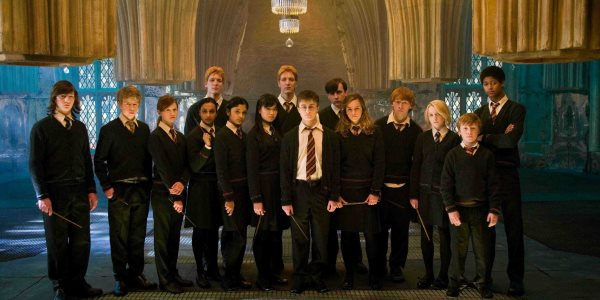
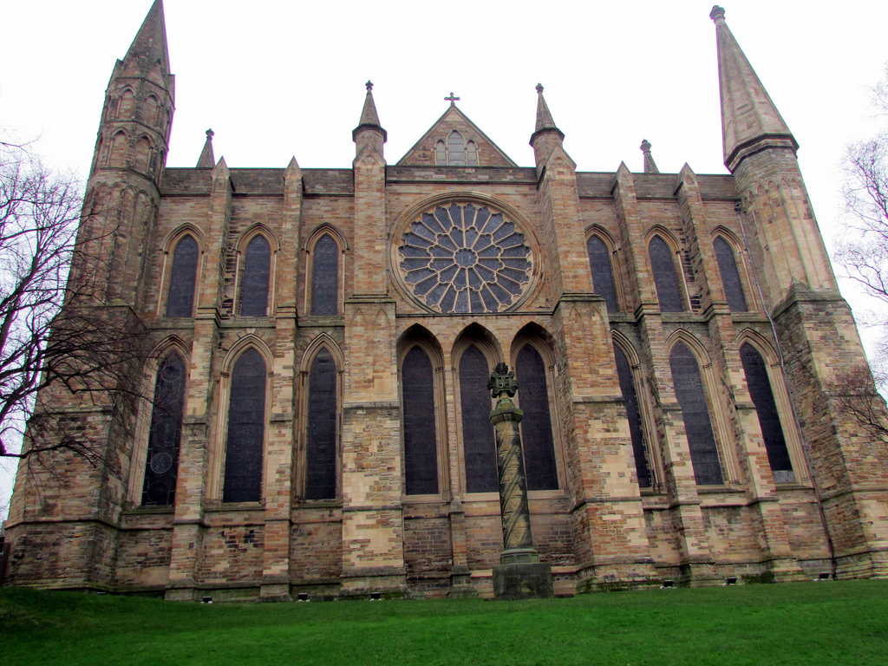
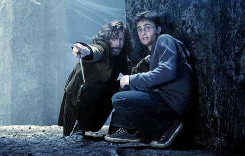
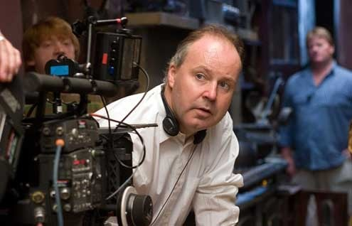
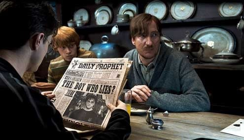
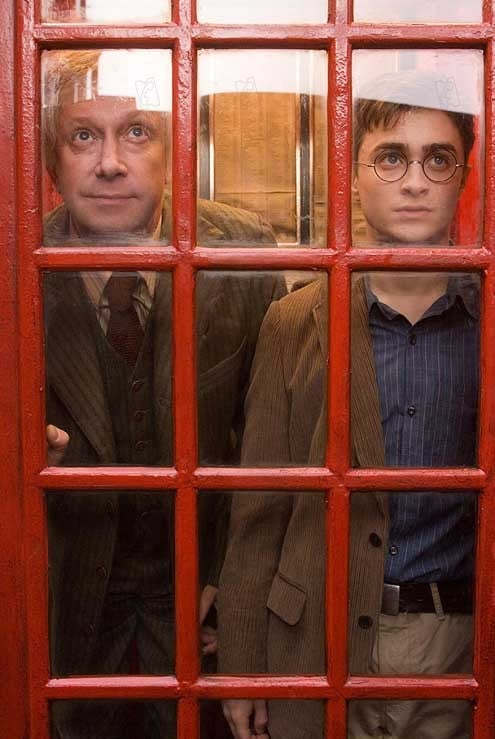
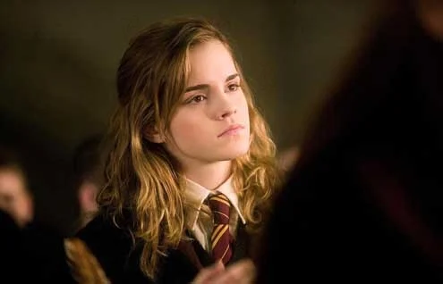

Alguém vai se dar o trabalho de me dizer o que essa Ordem...?
É uma sociedade secreta.Dumbledore é o responsável, fundou a Ordem. São as pessoas que lutaram contra Você-Sabe-Quem da última vez.
Enredo

No filme "Harry Potter e a Ordem da Fênix," Harry retorna a Hogwarts e descobre que o Ministério da Magia está negando o retorno de Voldemort e impõe Dolores Umbridge como professora. Harry, junto com seus amigos, forma a Armada de Dumbledore para se preparar para a luta contra as forças das trevas. O filme culmina em uma batalha no Ministério da Magia, onde Sirius Black é morto e a verdade sobre o retorno de Voldemort é finalmente revelada ao mundo.
Filme (2007)

O filme "Harry Potter e a Ordem da Fênix" foi filmado principalmente nos Estúdios Leavesden, na Inglaterra, onde foram construídos muitos dos cenários icônicos. Algumas cenas externas foram rodadas em locações históricas, como a Catedral de Durham e a Lacock Abbey, que serviram como partes de Hogwarts. Adicionalmente, cenas em Londres incluem o Ministério da Magia e a Praça Grimmauld, filmadas em locais como o Claremont Square.
Elenco

- Daniel Radcliffe como Harry Potter
- Rupert Grint como Ron Weasley
- Emma Watson como Hermione Granger
- Imelda Staunton como Dolores Umbridge
- Michael Gambon como Alvo Dumbledore
- Gary Oldman como Sirius Black
- Ralph Fiennes como Lord Voldemort
- Helena Bonham Carter como Bellatrix Lestrange
- Alan Rickman como Severus Snape
- Maggie Smith como Minerva McGonagall
Produção

A produção de "Harry Potter e a Ordem da Fênix" foi conduzida por uma equipe talentosa e experiente:
- Diretor: David Yates
- Produtores: David Heyman e David Barron
- Roteiro: Michael Goldenberg, baseado no livro de J.K. Rowling
- Diretor de Fotografia: Slawomir Idziak
- Editor: Mark Day
- Compositor: Nicholas Hooper
- Design de Produção: Stuart Craig
- Figurinista: Jany Temime
Recepção (Critica)

"Harry Potter e a Ordem da Fênix" recebeu críticas mistas a positivas, com elogios para sua direção, performances e temas mais sombrios, mas algumas ressalvas sobre a condensação da trama do livro. David Yates foi elogiado por trazer uma abordagem mais madura e séria à série, destacando-se a performance de Imelda Staunton como a detestável Dolores Umbridge. No entanto, alguns fãs e críticos sentiram que a adaptação deixou de fora detalhes importantes do livro, o que poderia ter enriquecido o enredo e os personagens secundários. No geral, o filme é visto como um ponto de virada crucial na série, preparando o terreno para os eventos finais e elevando a intensidade emocional da história.
Bilheteria

Harry Potter e a Ordem da Fênix" foi um sucesso de bilheteria. o filme arrecadou aproximadamente 942 milhões de dólares em todo o mundo. Isso o colocou como um dos filmes mais lucrativos da franquia Harry Potter até aquele momento, mostrando sua popularidade contínua entre o público global.
Prêmios e Nomeações

| Prêmio |
Categoria |
Indicado |
Resultado |
| MTV Movie Awards (2008) |
Melhor Revelação |
Emma Watson (Hermione Granger) |
Ganhou |
| National Movie Awards (2008) |
Melhor Atriz |
Emma Watson (Hermione Granger) |
Ganhou |
| BAFTA Awards (2008) |
Melhor Direção de Arte |
Sim |
Indicado |
| BAFTA Awards (2008) |
Melhor Figurino |
Sim |
Indicado |
| Teen Choice Awards (2007) |
Melhor Filme de Fantasia |
Sim |
Indicado |
| VES Awards (2008) |
Melhor Ambiente Virtual em Filme |
Sim |
Indicado |